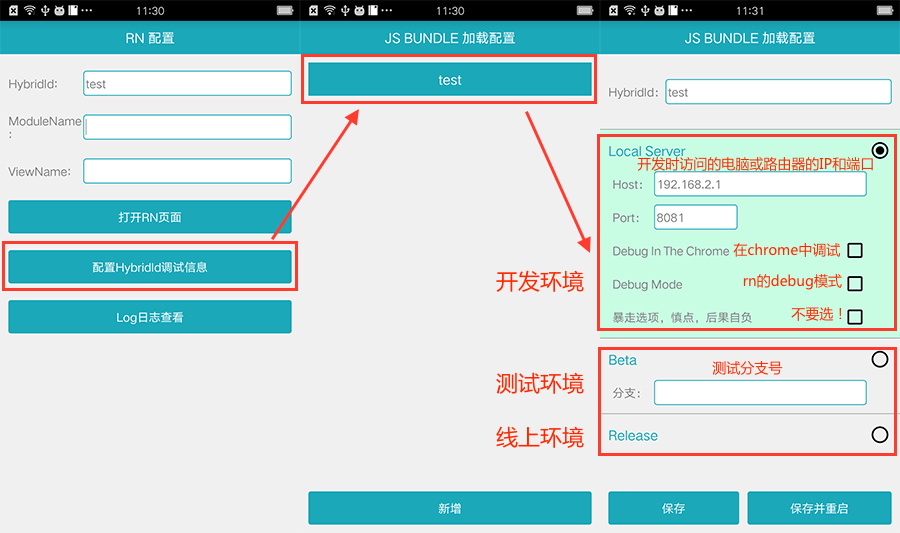
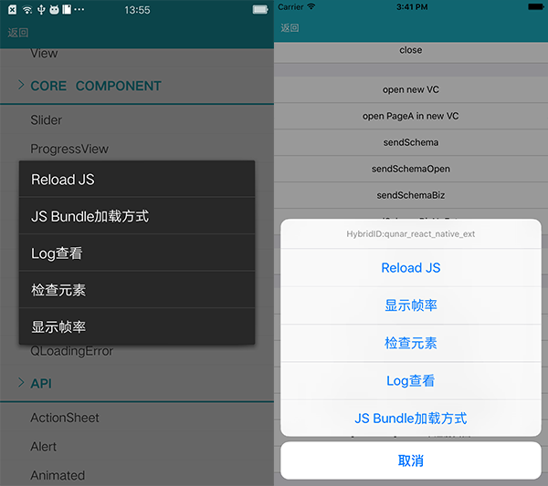

QRN 开发工具
在 QRN 的开发和测试环节中，都会涉及使用开发工具来配置 QRN 的环境。本节主要介绍客户端中的QRN开发工具。为了方便开发，我们除了提供大客户端的环境，还提供了独立的壳程序，里面是一个纯净的 QRN 运行环境。
客户端地址
独立壳程序
- Android：apk
- iOS：gitlab*(安装方法见README，该壳程序可以在模拟器和手机中使用，注意，我们使用的是master分支，请
git checkout master，如果后续更新git pull出现冲突的时候建议直接删除然后重新git clone)
[*] iOS的独立壳程序需要使用XCode 7或以上版本进行构建。XCode可以在Mac App Store中免费获得。
大客户端
配置开发/测试环境
第一步：唤起开发工具
- 独立APP-iOS：进入APP之后，摇晃手机，出现开发工具界面
- 独立APP-Android：进入之后即是开发工具界面
- 大客户端：点击QBUG图标之后，长按第三个按钮，出现开发工具界面
第二步：配置环境
Android 环境
第一步：完成如下配置，保存并重启。

参数说明：
LocalServer：本地服务环境Host：本机的ip地址（确保手机和电脑在同一个局域网，若选中此环境，此项为必填）Port：端口号（默认值：8081，一般不需要修改）Debug In The Chrome：在Chrome中调试Js代码：详细见:如何使用Chrome调试Debug Mode：Js端的debug模式暴走选项，慎点，后果自负：不要选中Beta：beta环境分支：项目所在的分支名（若选中此环境，此项为必填）release：线上环境
第二步：回到入口页面，完成如下入口参数的配置，然后点击『打开RN页面』进入项目。

iOS 环境
第一步：完成如下配置，保存并重启。

第二步：点击『点击重新加载获取RCTVC』
第三步：在RN页面中唤起开发工具
在已经进入RN页面之后，可以通过摇晃的方法，唤起开发工具。

参数说明：
Reload Js：重新加载业务的js代码，若前端js发生更改，可通过此功能刷新，查看更改后的效果。JsBundle加载方式：进入开发工具界面。Log日志查看：详细见:调试日志查看。检查元素：查看View布局的相关信息。显示帧率：显示FPS覆盖层，帮助你调试性能问题。